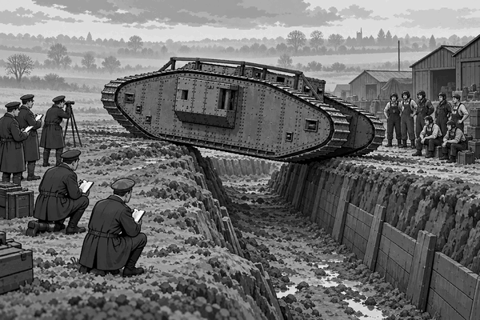

FACT
World War One began in 1914.
Soon, long lines of trenches crossed the Western Front.
Some trenches were wide and deep.
Between them lay mud, shell holes and sharp wire.
Ordinary cars and lorries could not cross this ground.
Their wheels sank or became trapped.
British engineers began building a new kind of vehicle.
It would have tracks instead of ordinary wheels.
Tracks spread the vehicle’s great weight across the ground.
The first test machine was called Little Willie.
It could move, but its tall, boxy body could not cross a wide trench.
The engineers tried again.
Their new machine was called Mother.
It had a long diamond shape.
Its tracks went all the way around its body.
The high front could climb a steep bank.
The long body could reach across a gap.
At the practice ground, Mother crawled towards a trench.
Its nose rose into the air.
The tracks gripped the far side.
Then the heavy machine pulled itself across.
The idea had worked.
This design became the Mark I tank.
Tank fact: A Mark I weighed about 28 tons and carried a crew of eight. Its top road speed was only about four miles per hour—roughly a quick walking pace.
Four crew members helped to drive and steer it.
The engine was inside with them.
It was hot and extremely noisy.
The crew often used hand signals because they could not hear each other.
On 15 September 1916, Mark I tanks went into battle for the first time.
This happened during the Battle of Flers-Courcelette on the Somme.
The huge shapes surprised people on both sides.
Some tanks pushed through wire.
Some crossed trenches and helped soldiers move forwards.
But the first tanks were not perfect.
Many broke down, became stuck or failed to reach the starting line.
Their engines and tracks were still new technology.
Engineers studied every problem.
Later tanks became easier to steer and more reliable.
The Mark I did not end World War One.
But it showed that a tracked armoured vehicle could cross ground that stopped ordinary wheels.
What began with Little Willie and Mother changed military vehicles forever.
1. Why did the tank have a long diamond shape?
2. Why did the crew use hand signals?
3. On what date were Mark I tanks first used in battle?